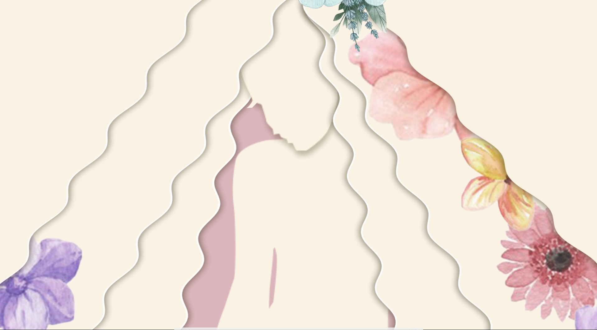

蝴蝶
以蝴蝶作為空間中的流動意象， 透過光影、雲朵裝置與動態投影， 讓原本靜態的診所場域， 產生如夢境般的輕盈氛圍。 觀者在移動之間， 能感受到視線、光線與空間層次的流動， 讓等待本身也成為一種沉浸式體驗。
Projection Content
Live video
以蝴蝶作為空間中的流動意象， 透過光影、雲朵裝置與動態投影， 讓原本靜態的診所場域， 產生如夢境般的輕盈氛圍。 觀者在移動之間， 能感受到視線、光線與空間層次的流動， 讓等待本身也成為一種沉浸式體驗。
Spatial Installation


